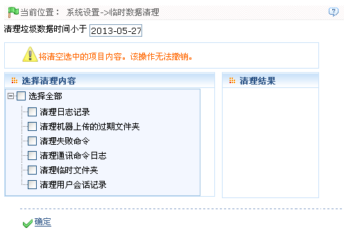

9.6 临时数据清理
清理系统中的数据，包括：清理日志记录、清理机器上传的过期文件夹、清理失败命令、清理通讯命令日志、清理临时文件夹和清理用户会话记录。
1、单击【系统设置】 【临时数据清理】，进入临时数据清理页面：
【临时数据清理】，进入临时数据清理页面：

清理垃圾数据时间小于：设置日期，日期的设置参见附录1 常用操作中的2选择日期。意思即为清理该日期以前的数据记录。
选择清理内容：单击打勾选择需清理的内容。
清理日志记录：删除日志表中的垃圾数据；
清理临时文件夹：清除tmp目录下生成的临时文件夹；
清理用户会话记录：删除过期的用户会话记录。
 注意：数据清除后，将无法还原。请慎重操作。
注意：数据清除后，将无法还原。请慎重操作。
2、设置完成后，单击【确定】按钮，开始清理。成功后，清理结果窗口中将显示清理结果。